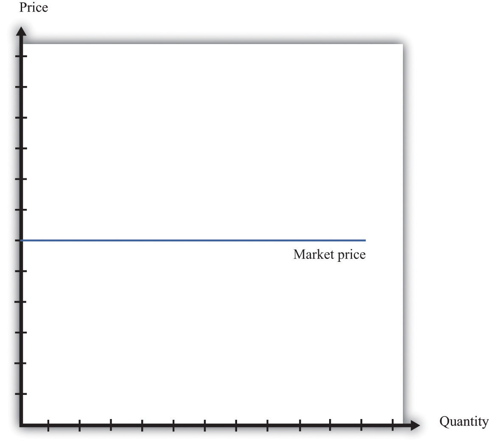
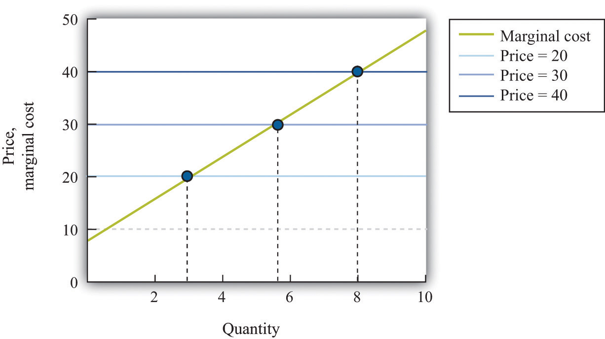

In this chapter, we have paid a great deal of attention to demand, but we have not spoken of supply. There is a good reason for this: a firm with market power does not have a supply curve. A supply curve for a firm tells us how much output the firm is willing to bring to market at different prices. But a firm with market power looks at the demand curve that it faces and then chooses a point on that curve (a price and a quantity). Price, in this chapter, is something that a firm chooses, not something that it takes as given. What is the connection between our analysis in this chapter and a market supply curve?
If you produce a good for which there are few close substitutes, you have a great deal of market power. Your demand curve is not very elastic: even if you charge a high price, people will be willing to buy the good. On the other hand, if you are the producer of a good that is very similar to other products on the market, then your demand curve will be very elastic. If you increase your price even a little, the demand for your product will decrease a lot.
The extreme case is called a perfectly competitive market. In a perfectly competitive market, there are numerous buyers and sellers of exactly the same good. The standard examples of perfectly competitive markets are those for commodities, such as copper, sugar, wheat, or coffee. One bushel of wheat is the same as another, there are many producers of wheat in the world, and there are many buyers. Markets for financial assets may also be competitive. One euro is a perfect substitute for another, one three-month US treasury bill is a perfect substitute for another, and there are many institutions willing to buy and sell such assets.
Toolkit: Section 31.9 "Supply and Demand"
You can review the market supply curve and the definition of a perfectly competitive market in the toolkit.
An individual seller in a competitive market has no control over price. If the seller tries to set a price above the going market price, the quantity demanded falls to zero. However, the seller can sell as much as desired at the market price. When there are many sellers producing the same good, the output of a single seller is tiny relative to the whole market, and so the seller’s supply choices have no effect on the market price. This is what we mean by saying that the seller is “small.” It follows that a seller in a perfectly competitive market faces a demand curve that is a horizontal line at the market price, as shown in Figure 7.20 "The Demand Curve Facing a Firm in a Perfectly Competitive Market". This demand curve is infinitely elastic: −(elasticity of demand) = ∞. Be sure you understand this demand curve. As elsewhere in the chapter, it is the demand faced by an individual firm. In the background, there is a market demand curve that is downward sloping in the usual way; the market demand and market supply curves together determine the market price. But an individual producer does not experience the market demand curve. The producer confronts an infinitely elastic demand for its product.
Figure 7.20 The Demand Curve Facing a Firm in a Perfectly Competitive Market
The demand curve faced by a firm in a perfectly competitive market is infinitely elastic. Graphically, this means that it is a horizontal line at the market price.
Everything we have shown in this chapter applies to a firm facing such a demand curve. The seller still picks the best point on the demand curve. But because the price is the same everywhere on the demand curve, picking the best point means picking the best quantity. To see this, go back to the markup formula. When demand is infinitely elastic, the markup is zero:
so price equals marginal cost:
price = (1 + markup) × marginal cost = marginal cost.This makes sense. The ability to set a price above marginal cost comes from market power. If you have no market power, you cannot set a price in excess of marginal cost. A perfectly competitive firm chooses its level of output so that its marginal cost of production equals the market price.
We could equally get this conclusion by remembering that
marginal revenue = marginal costand that when −(elasticity of demand) is infinite, marginal revenue equals price. If a competitive firm wants to sell one more unit, it does not have to decrease its price to do so. The amount it gets for selling one more unit is therefore the market price of the product, and the condition that marginal revenue equals marginal cost becomes
price = marginal cost.For the goods and services that we purchase regularly, there are few markets that are truly perfectly competitive. Often there are many sellers of goods that may be very close substitutes but not absolutely identical. Still, many markets are close to being perfectly competitive, in which case markup is very small and perfect competition is a good approximation.
Table 7.5 "Costs of Production: Increasing Marginal Cost" shows the costs of producing for a firm. In contrast to Table 7.4 "Marginal Cost", where we supposed marginal cost was constant, this example has higher marginal costs of production when the level of output is greater.Total cost in Table 7.5 "Costs of Production: Increasing Marginal Cost" is 50 + 10 × quantity + 2 × quantity2.
Table 7.5 Costs of Production: Increasing Marginal Cost
| Output | Total Costs ($) | Marginal Cost ($) |
|---|---|---|
| 1 | 22 | 12 |
| 2 | 38 | 16 |
| 3 | 58 | 20 |
| 4 | 82 | 24 |
| 5 | 110 | 28 |
| … |
Figure 7.21 "The Supply Curve of an Individual Firm" shows how we derive the supply curve of an individual firm given such data on costs. The supply curve tells us how much the firm will produce at different prices. Suppose, for example, that the price is $20. At this price, we draw a horizontal line until we reach the marginal cost curve. At that point, we draw a vertical line to the quantity axis. In this way, you can find the level of output such that marginal cost equals price. Looking at the figure, we see that the firm should produce 3 units because the marginal cost of producing the third unit is $20. When the price is $30, setting marginal cost equal to price requires the firm to produce 5.5 units. When the price is $40, setting marginal cost equal to price requires the firm to produce 8 units.
The supply curve shows us the quantity that a firm will produce at different prices. Figure 7.21 "The Supply Curve of an Individual Firm" reveals something remarkable: the individual supply curveHow much output a firm in a perfectly competitive market will supply at any given price. It is the same as a firm’s marginal cost curve. of the firm is the marginal cost curve. They are the same thing. As the price a firm faces increases, it will produce more. Note carefully how this is worded. We are not saying that if a firm produces more, it will charge a higher price. Firms in a competitive market must take the price as given. Instead, we think about the response of a firm to a change in the price.The individual firm’s supply curve is an exact counterpart to something we show in Chapter 4 "Everyday Decisions", where we derive the demand curve for an individual. We show that an individual buys a good up to the point where marginal valuation equals price. From this we can conclude that the demand curve for an individual is the same as the individual’s marginal valuation curve. In Chapter 8 "Why Do Prices Change?", we use an individual firm’s supply curve as the basis for the market supply curve. Likewise, we use the individual demand curve as the basis for the market demand curve. By combining these curves, we obtain the supply-and-demand framework, which we can use to understand changing prices in an economy.
Toolkit: Section 31.9 "Supply and Demand"
The individual supply curve shows how much output a firm in a perfectly competitive market will supply at any given price. Provided that a firm is producing output, the supply curve is the same as marginal cost curve.
Figure 7.21 The Supply Curve of an Individual Firm
The firm chooses its quantity such that price equals marginal cost, which implies that the marginal cost curve of the firm is the supply curve of the firm.